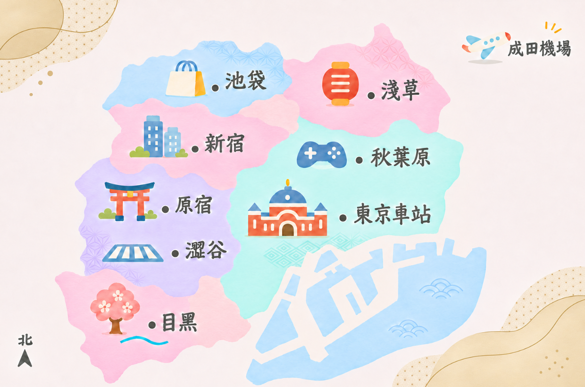

去程
TPE
台北（桃園）
17:1511/27（五）NRT
東京（成田）
21:3011/27（五）航班MM628
A320neo
在台灣先填寫好，並將需要的畫面截圖存起來。
A LITTLE TRIP, A LOT TO TASTE
旅行不用排得太滿，好吃的倒是不能少。
一起把期待的味道，收藏在這裡。
每一間，都是下一頓的靈感。
GOOD FOOD TASTES BETTER TOGETHER · 好味道，和你一起

點「排行程」加入當天想去的地區。
台北（桃園）
17:1511/27（五）東京（成田）
21:3011/27（五）A320neo
東京（成田）
22:0512/3（四）台北（桃園）
01:25＋1日12/4（五）A320neo
隔日抵達這個地區還沒有收藏。
淺草寺 貓咪仙貝週一、五 10:30–18:45
週二 11:00／週三、日 11:30 開門，皆 18:00 打烊
週四 11:00／週六 10:30 開門，皆 18:30 打烊週一週二週三週四週五週六週日
推薦 365 天生日護手霜、護唇膏，其次是空間香氛袋。每日 09:30–18:00週一週二週三週四週五週六週日
原宿店每日 11:00–23:00
澀谷店每日 11:00–20:00週一週二週三週四週五週六週日
寶可夢中心、轉蛋轉蛋的森林。
每日 11:00–21:00週一週二週三週四週五週六週日
每日 10:00–20:00週一週二週三週四週五週六週日
每日 11:00–18:00週一週二週三週四週五週六週日
平日 11:00–21:00
週六、日及國定假日 10:30–21:00週一週二週三週四週五週六週日
每日 10:30–21:00週一週二週三週四週五週六週日
UNIQLO、無印良品（MUJI）、大創（DAISO）、3COINS、思夢樂
每日 09:30–22:00週一週二週三週四週五週六週日
週一～六 11:00–21:00
週日 11:00–20:00週一週二週三週四週五週六週日
每日 10:00–20:00週一週二週三週四週五週六週日
每日 10:00–21:00週一週二週三週四週五週六週日
每日 10:00–20:00週一週二週三週四週五週六週日
每日 11:00–20:00週一週二週三週四週五週六週日
每日 11:00–21:00週一週二週三週四週五週六週日
每日 11:00–21:00週一週二週三週四週五週六週日
週一～六 11:00–20:30
週日 11:00–20:00週一週二週三週四週五週六週日
每日 10:30–19:30（PDF 未標分店）週一週二週三週四週五週六週日
週一～六 11:00–20:00
週日 10:30–19:30週一週二週三週四週五週六週日
週一～五 11:00–22:00
週六、日 10:00–22:00週一週二週三週四週五週六週日
這個地區還沒有服飾收藏。
這個地區還沒有藥妝收藏。
藥妝、雜貨
美妝保養
這個地區還沒有雜貨收藏。
量販店
藥妝、雜貨
PDF 所列分店均為 24 小時營業。
這個地區還沒有收藏。